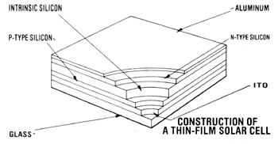

Imagine what would be possible if solar cells were available for 70 cents per watt! At that price, a fully equipped home would receive its electricity at a cost that's equivalent to utilityproduced energy billed at 10 cents per kilowatt-hour (KWH). Power company rates now average 7 cents per KWH in the U.S., and the dime-per figure promises to be upon us all too soon. (In other parts of the world-Japan, for example-even that price is already a fond but fading memory.)
But is it really possible that solar cells will sell for 70 cents per watt in the next few years? The answer is yes, if current trends in thinfilm cell research are any indication of what can be done.
And one of the hotbeds of such investigation is Japan, which began to organize a national effort to study photoelectricity back in 1974. You see, that country recognized-nearly ten years ago-that fuel prices were going nowhere but up! Since then, photovoltaics researchers have taken great strides toward the goal of making solar electricity a practical, economical alternative to that generated with imported oil.
The Japanese investigated numerous alternatives, and-in 1979-settled on thin-film, amorphous-silicon technology as the best bet. In fact, many of that country's scientists anticipate that once the technology has matured, the cost of such cells could drop to 70 cents per watt by 1985 . . . and to as low as 25 cents per watt by 1990.
Unlike the popular single-crystal wafer I described a couple of issues back (see issue 76, page 178), amorphous silicon has physical properties that can best be compared with those of glass. Instead of a rigid crystalline framework, the material has a more fluidlike form that lacks orderly structure. (In fact, the word amorphous means "without definite form".)
It's the shapeless nature of this kind of silicon that holds so much promise for photovoltaic production. In contrast to the timeconsuming, energy-intensive chore of growing single-crystal wafers, producing amorphous cells is actually quite simple.
Fabrication of the cell begins with a sheet of ordinary glass, over which a very thin layer of conductive metal-actually a mixture of indium oxide and tin oxide, referred to as the ITO layer-is deposited. Its purpose is to provide the positive contact for the cell.
A layer of P-type semiconductor silicon is then applied on top of the ITO by a plasma process. (The material is released from its gaseous carrier by means of radio-frequency bombardment.) Then a layer of undoped (nonconducting) silicon, which acts as an insulating barrier, is formed over the two previous coatings. A third and final silicon deposit consists of N-type semiconductor material. And backing up the whole assembly-providing the negative contact-is a covering of aluminum.
The semiconductor silicon layers on the glass base are so thin that they're measured in millionths of an inch . . . they total just 20 millionths, to be exact. As a result, the entire cell formation process uses only 1/300 as much material as is required for the production of a conventional solar cell!
Not only are the material costs for thin-film cells considerably lower than for single-crystal units (with an accompanying reduction in waste), but the steps involved in producing them are fewer. Moreover, the process lends itself to automation. Therefore, the major expenses involved in fabricating thin-film cells will undoubtedly be the cost of the glass and the aluminum backing.
Amorphous cells do have one disadvantage. At present, single-crystal wafers are capable of operating at about 10% efficiency, which means that approximately one-tenth of all the sun's energy striking the face of the cell is converted into electricity. Production amorphous cells, on the other hand, function-so far-at only about 4% efficiency. In order to generate the same amount of power as a conventional cell, therefore, the area of the amorphous cell must be 2-1/2 times as large. Nevertheless, laboratory amorphous units have already exceeded 8% efficiency, and there's little doubt that this figure can eventually be duplicated on an assembly line.
Furthermore, two other features of the thin-film cell serve to offset its lower efficiency. For one, the spectral response of the amorphous silicon more closely approximates that of sunlight, which means that the material reaches its efficiency level by making use of a wider range of the energy available. And the output voltage of the individual amorphous wafer is higher than that of a single-crystal cell, thereby reducing the number of units needed in series to generate a given voltage.
In the final analysis, though, the choice between single-crystal and thin-film photovoltaics boils down to a trade-off between efficiency and reduced production cost. And all things considered, it looks as though the amorphous cells could prove to be a bargain.
If you're under the impression that the amorphous cell is still just another pie-in-the-sky dream, you'd better think again. Although you can't buy a module for your home as yet, amorphous cells are being manufactured on a production basis right now . . . in Japan!
Sanyo Electric, the same company that makes stereos and televisions, has recently opened the largest photovoltaics manufacturing plant in the world, turning outyou guessed it-thin-film, amorphous-silicon solar cells. And there are a number of calculators, radios, and clocks-on the market today-powered by such cells. Unfortunately, it's impossible to say how long it might take for panels to be available outside Japan, since the initial production is destined for domestic use.
However, while Japan does seem to be breaking ground in thin-cell research, the United States isn't exactly standing still . . . even though this country hasn't yet produced amorphous cells on any major scale. Research is being conducted by no fewer than a halfdozen independent U.S. companies and organizations . . . but the funding for the work doesn't come close to equaling the amount Japanese corporations receive from their government.
Currently, Japan is spending a full 33% of its national budget on solar research, and most of that money now goes into the photovoltaics program. In short, the Land of the Rising Sun has made a firm commitment to exploit solar energy and appears to be ready to make the sacrifices necessary to stick to it.
U.S. policy, on the other hand, is wishy-washy at best . . . it vacillates from one administration to the next. Only $62.9 million has been set aside for photovoltaics research in 1983, down from the $161.5 million allocated last year. Most of the available energy research funds have been channeled, instead, into areas such as nuclear power.
Still, the future looks bright for thin-film, amorphous-silicon solar cells, whether or not the U.S. proves to be a major source. Unfortunately, present prices (although they compare favorably with those of other currently available photovoltaics) are anything but low . . . running between $10 and $20 per watt. As production rises and sales increase, however (and the Japanese seem intent on making sure that both do happen), the cost will likely drop dramatically. perhaps by as early as 1985 you'll be able to buy amorphous cells for less than $1.00 per watt. And by 1990 . . . who knows?
|
 |
|
|